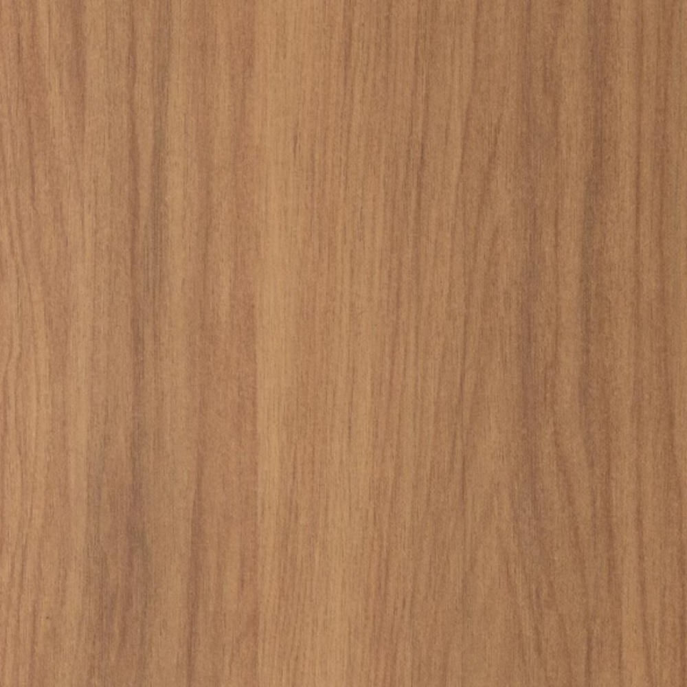
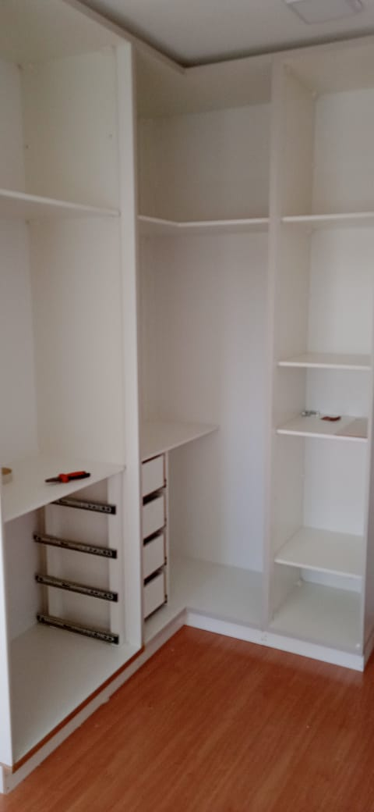
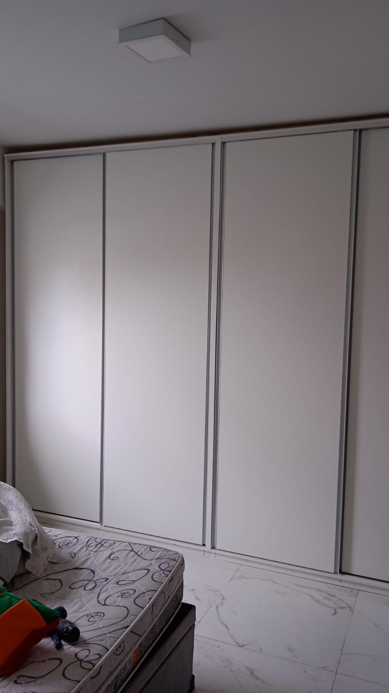
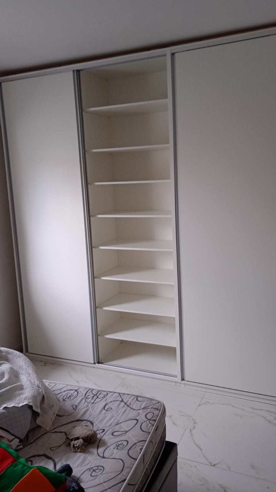

Vídeo de Marcenaria
Seu navegador não suporta a tag de vídeo.
Seu navegador não suporta a tag de vídeo.

Marcenaria Josimar
Serviços de qualidade com competência
  
Fale Conosco no WhatsApp:
(11) 96103-9610